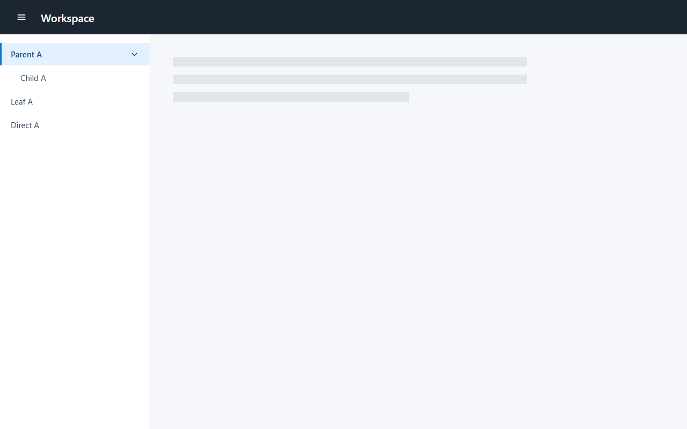
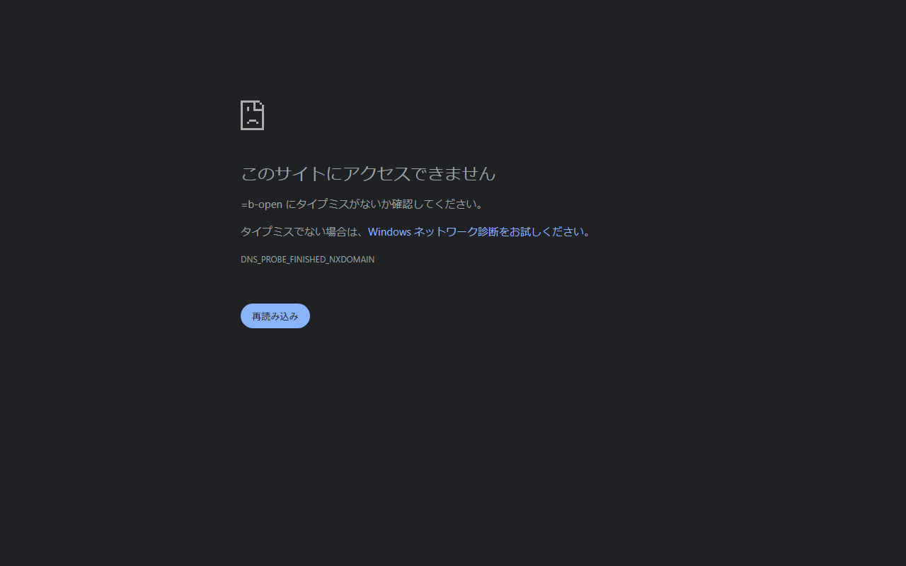
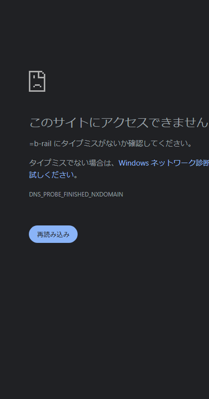

HUMAN_BLOCKER — human review required
Bounded reference: Pattern A requires a Header trigger after the Drawer is fully hidden. Pattern B requires a Drawer control retained in an icon rail. This is an image-first, source-blind review.
Evidence




Concise findings
- Conflicted / human review required: the frozen Stage 1 observation reports no Header/controller in A-hidden, while a parent original-resolution inspection of this exact image reports a dark Header in the top ~64 px, a hamburger near x=39/y=34, and
Workspacenear x=77/y=34. Do not treat Pattern A as an unqualified machine failure. - Conditionally accepted: B-open/B-rail visibly show Drawer-region control ownership, rail shortcuts, no leading expanded-row icons, a trailing chevron, square current row, and neutral fixture.
- Unresolved: images cannot prove accessible names, ARIA values/relationships, controlled IDs, or sole-controller behavior.
- No unsupported invention observed: no visible extra caption, badge, count, status, product identity, or declared-unresolved behavior. Wide/narrow do not prove viewport policy.
Human questions and decision choices
- For A-hidden, choose: accepted if human inspection confirms the retained Header/controller; conditionally accepted if a clarified capture/re-extraction is needed; or rejected only if human inspection confirms it is absent under the current Contract.
- For Pattern B semantics, choose: accepted after a source/assistive-technology check proves the named sole controller and ARIA relationship; conditionally accepted pending that check; or rejected if it cannot be demonstrated.
- For adaptive behavior, choose: not applicable unless product supplies a viewport-to-mode policy; the wide/narrow captures alone are not evidence.